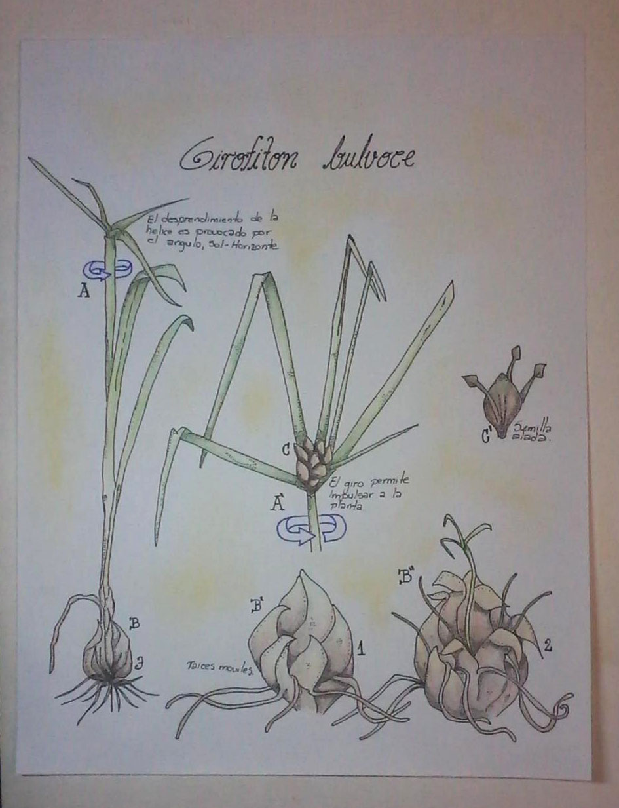
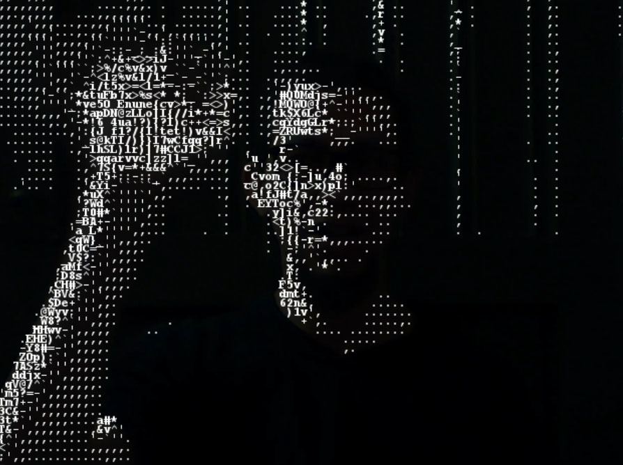
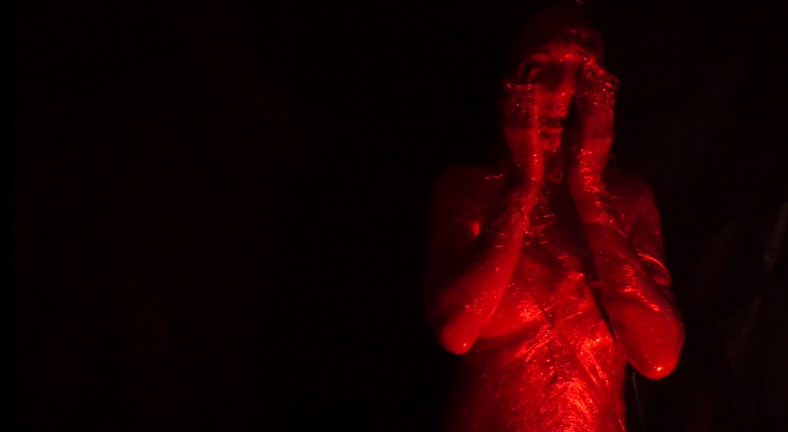
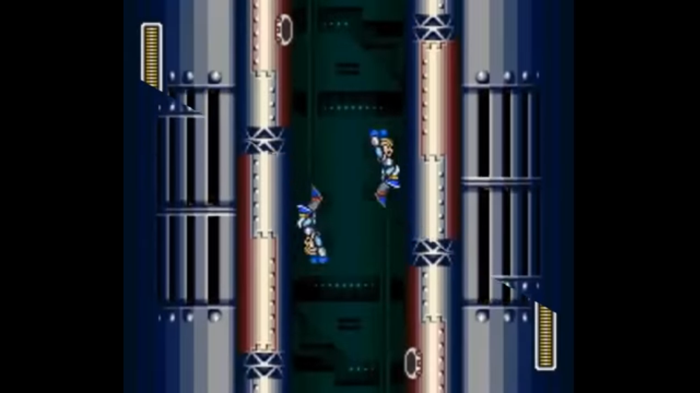

creada para una convocatoria de la cinemateca, en la cual hacía parte de un universo alterno trasmedial sobre los viajes del anarquista Biofilo panclasta. Cabe aclarar que esta ilustración representa un ejemplar inventado por mi, en el cual se entremezclan características de varias plantas y comportamientos de otros seres.

Video interactivo-Fotograma. Título: conciencia
en donde se intenta demostrar cómo la conciencia emerge a través de la interacción de muchas personas con un personaje (se generó una interfaz sencilla tipo chat), que se muestra en una pantalla. El video se hizo a partir de un framework (open frameworks) del lenguaje C++ y está construido a partir de puntos con caracteres ASCII.

Instalación. Título: Crisálida
este objeto simulaba una crisálida, la cual es una metáfora del cambio de lo orgánico hacia lo mecánico. Con software y hardware escuchaba lo que el público decía y reaccionaba, creando un párrafo aleatorio, adicionalmente se proyectaban los rostros de todos los participantes.
Video. Título: Supr Alt Ctrl,
la idea de este video arte consiste en mostrar cómo la sociedad ha normalizado el control hacia la mujer y la desesperación que sienten ellas al tratar de salir de esa condición.

Video. Título: Clean Bandit ft. MEGAMAN X - Come Over.
Este clip intenta trasmitir la unión existente entre el beat de una canción (come over, Clean Bandit) y las imágenes que se proyectan, las cuales hacen parte de un videojuego en 16 bits, que de por sí muestra un aspecto importante de la cultura pop y tiene un valor significativo en las nuevas formas de narración. La amalgama del sonido y el video crean una nueva narrativa, en la cual se puede resignificar el contenido de la canción o bien la historia que se presenta en el juego, todo esto en el marco de técnicas edición creativa.
